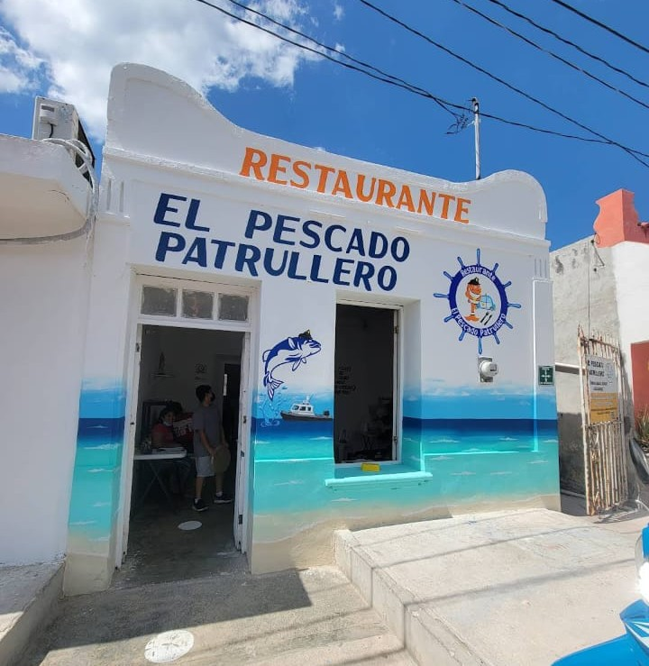

Desde nuestros inicios
El Pescado Patrullero nació en 2012 de la pasión de la familia Martínez por la cocina marina. Lo que comenzó como un pequeño negocio familiar se ha convertido en uno de los restaurantes de mariscos más reconocidos de la región.
Nuestra filosofía siempre ha sido ofrecer los productos más frescos del mar, preparados con técnicas culinarias tradicionales y un toque de innovación.
A lo largo de los años, hemos mantenido nuestro compromiso con la calidad, la sostenibilidad y el sabor auténtico que caracteriza nuestra cocina.